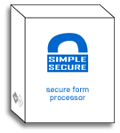

description
SimpleSecure is an
advanced form processing script written in Perl to run on Windows and UNIX
servers. SimpleSecure supports an unlimited number of forms (within the limits of the
server) with no limitation as to the fields or types of information
you are collecting. originally based on Matt Wright's FormMail script, SimpleSecure 3.0 has been written from
the ground up with security and flexibility in mind.
SimpleSecure supports encrypted messages using PGP, GPG, RC4 or JMH.
Perl developers have the ability to add additional encryption methods. messages
may also be sent in plain text, making SimpleSecure ae easy, practical solution for
non-secure form processing needs as well.
SimpleSecure supports file uploads and will include them in
the email as an attachment. The number of attachments per message is
limited only by the server capabilities.
SimpleSecure supports Sendmail and SMTP for
email transmission, making it suitable for various types of server situations.
installation instructions
IMPORTANT! all files (except the .gif files) must be uploaded in ASCII mode. most
FTP clients are set to use "Auto" mode by default and
will not upload the files correctly. Uploading in BINARY
mode will cause the application to work incorrectly or
not at all. You should manually specify ASCII mode on
your FTP client.
- download and unzip the distribution file. if you
are on a UNIX server only, open ssecure.pl and verify that the top line is
the correct path for Perl. the default setting is /usr/local/bin/perl change
this only if neccessary. "which perl" at the shell prompt will tell you
the proper location of perl.
- upload all files from your local computer to your web server. be
sure to use ASCII mode for all files (except the .gif files) and preserve the
directory structure. the directory ssecure should be uploaded to your
html root directory and the files inside cgi-bin should be uploaded to your cgi-bin
directory.
- Change the file permissions:
- For UNIX Servers, use either the chmod command at the shell prompt, or
use your FTP software to execute the chmod command (ex. "chmod 606
filename.txt"). Using WS_FTP, this is done by right-clicking on the
file and selecting "chmod" from the pop-up menu.
- cgi-bin/ssecure.pl = 705 (rwx---r-x)
- cgi-bin/data/* = 606 (rw----rw-) (*
indicates all files in this directory)
- cgi-bin/temp/ = 707 (rwx---rwx)
- Windows Users - file permissions may not apply on your server. If
you have access to the windows operating system, you can change the NTFS
permissions through windows explorer. IIS also has it's own set of
permissions. If you have a web-based control panel, refer to it's
documentation or help files for changing permissions. The web server
account needs to have the following permissions:
- cgi-bin/ssecure.pl = 705 (Read/Execute)
- cgi-bin/data/* = 606 (Read/Write) (* indicates all files
in this directory)
- cgi-bin/temp/ = 707 (Read/Write/Execute)
- open your browser to /cgi-bin/ssecure.pl if
installation was successful, you should be greeted with a login screen.
enter "admin" for the username and "admin" for the password.
- if all file permissions are correct, you should see the main configuration
screen. proceed to useage instructions.
the general idea:
the general idea is that you create an html form with the action property set
to ssecure.pl. your user fills out the information on this form and
clicks the submit button. their responses are processed by
ssecure.pl and sent to you as an email message. SimpleSecure doesn't
particularly care what fields are on your form. it simply processes
whatever information is received and converts it to an email message. the
only exception are fields that begin with "cfg" any fields that begins
with "cfg" is considered a configuration variable and is not included in the
email message.
how SimpleSecure differs from other form
processors
old form processors (such has FormMail) require a hidden field to specify the
recipient of the email message, as well as other settings, such as subject,
email format, etc. this is a convenient approach, as you can support any
form with any recipient and no configuration of the script is required.
the problem with this system is that anyone can create a form with any
recipient, allowing just about anyone to "hijack" the usage of your FormMail
script. also, the email address to which the message is being sent is
easily viewable in the source of the HTML. email harvesters aside, it
may be undesireable to have the email address easily available to
everyone.
newer and more secure scripts have been created to address this issue,
however many require actually editing the script to add or change the email
recipients. some scripts allow you to designate a list of "ok" email
recipients, while others have you create configuration files for each form.
the SimpleSecure approach is to create a "recipient" of one or more email
addresses. each recipient record is assigned a
unique ID. on the html form, instead of specifying your email
address, you merely specify the ID number in a hidden form
field. Your email address is not required in the source, nor can it
be changed through a hidden form field. settings such as message format,
subject and redirect page can also be specified through the administration
panel, so you do not need to include a bunch of hidden variables on every
form. however, you can override the non-security-related settings with
hidden fields if you choose. in this way one "recipient" record can
support any number of forms.
recipient records are added and managed through the web-based
administration panel. only those with the administrator
username/password can access the administration panel. in addition to
all of the typical form processor settings, SimpleSecure also supports various
methods of encryption. message encryption settings can also be controlled
through the admin panel.
setup & administration
 once you have installed SimpleSecure, you should direct your browser to the
location of ssecure.pl on your server. you will be presented with the
login screen. if this is your first time logging in, the default
username/password is admin/admin. the first thing you should do is to
change this password.
once you have installed SimpleSecure, you should direct your browser to the
location of ssecure.pl on your server. you will be presented with the
login screen. if this is your first time logging in, the default
username/password is admin/admin. the first thing you should do is to
change this password.
There are Four main links at the top of the administration section:
Recipients, System Settings, System Information and Logout. The System
Settings link is the primary one of interest for setup and administration.
Recipients are discussed in the usage section below. System Information is
an informational page only and logout is self-explainitory.
Clicking on the System Settings link brings up several configuration
settings. These control the operation of the script. If you have
followed all of the instructions correctly, the only screen that you absolutely
have to check is the Email screen.
- General: This is
where you specify the admin username/password as well as the temporary
directory that SimpleSubmit can use for writing temporary files.
- Email: This
screen allows you to specify a path to the recipients database (not
recommended to change) as well as the server settings for sending email.
At this screen you should specify if SMTP or Sendmail is to be used, and the
server or file path that is required.
- Ecryption Settings: This screen is where you specify the paths to PGP, GPG
executables as well as a URL for your JMH Web Services.
- Display: This
controls the design style of SimpleSecure. You can edit the CSS code as
required.
- Defaults: This page allows you to restore the default
settings, or redefine the default settings.
form processing
 the first step in using SimpleSecure is to login to the administration panel
and create a new "recipient" record. the recipient detail screen several
fields, but most are quite simple and each has some brief explaination
text. once you create your new recipient, you will be presented
with sample html code that can be used as a starting point for your
form. Although extremely simple, this html contains the basic
code needed for all forms. notice, in particular, the hidden variable
cfgId, which specifies the recipient record to be used.
the first step in using SimpleSecure is to login to the administration panel
and create a new "recipient" record. the recipient detail screen several
fields, but most are quite simple and each has some brief explaination
text. once you create your new recipient, you will be presented
with sample html code that can be used as a starting point for your
form. Although extremely simple, this html contains the basic
code needed for all forms. notice, in particular, the hidden variable
cfgId, which specifies the recipient record to be used.
your form can contain as many additional fields as you like. any field
that does not begin with "cfg" will be processed by ssecure.pl and included in
the email message. text boxes, text areas, dropdown boxes, checkboxes,
radion buttons, etc, can all be used on your form. The presentation of the
email message can be controlled by simply naming your form fields
appropriately. your form can also contain file upload fields. file
uploads will be processed by ssecure.pl and included in the email message
as an attachment. if you have an upload field on your form, however, it is
required that the form tag include the setting
enctype="multipart/form-data" if you have forgotten this setting, only the
filename (not the actual file contents) will be processed and sent in the email
message.
version history
- 3.00 09/20/2003: renamed to SimpleSecure Pro.
Added support for HTML messages. Fixed GPG encryption bugs. Better
error trapping and reporting. Updated verysimple::Config to version
1.12. Renamed "Form Settings" to "Recipients" and added several form
paramters.
- 2.220 09/08/2003: updated to read encrytion options
from .crypt file instead of hard-codeing into script
- 2.210 09/07/2003: updated Crypt::PGPSimple to 0.14 to
support GPG
- 2.201 08/30/2003: updated verysimple::Email to 2.200
to deal with multiple file attachment loop of death. Changed Title output.
Moved temp directory to separate for security issues change tempfile name to
include process id to avoid conficts
- 2.200 08/29/2003: Added File Upload Feature &
ThankYou Message if there is no Redirect Page
- 2.001 Complete re-write. Released privately as 'Formtronic'